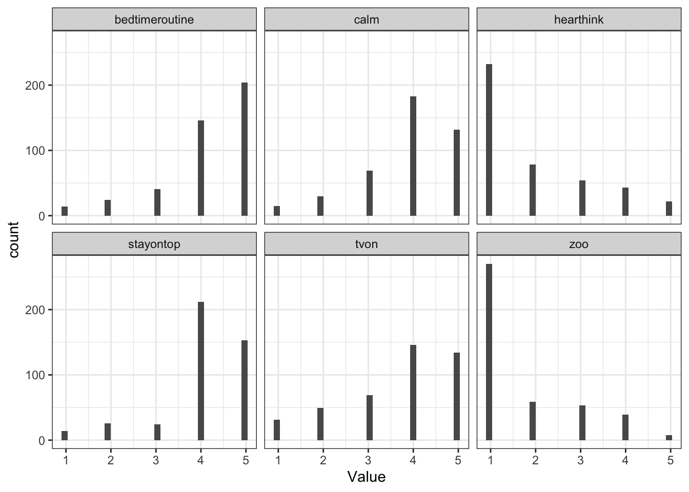
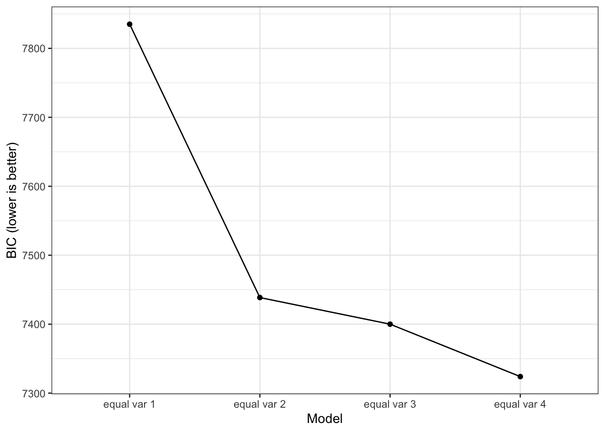
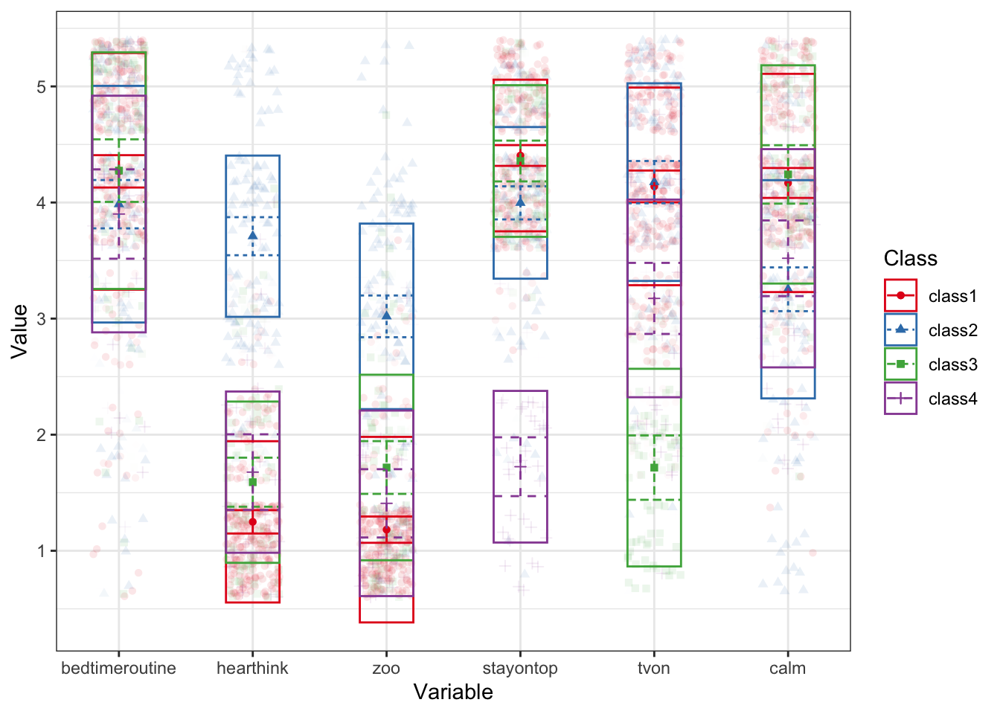
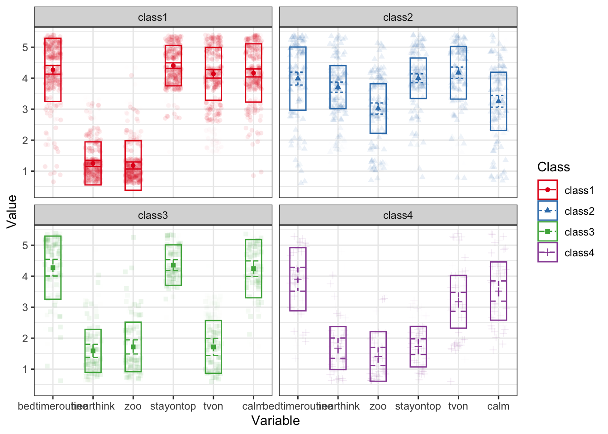

library(tidySEM)
library(dplyr)
library(tidyr)
library(ggplot2)11 Latent Profile Analysis
11.1 Loading R Packages
Load the required packages for this lab into your R environment.
11.2 Loading Data
Load the data into your environment. For this lab we will use a dataset based on N = 441 children whose caregivers completed a survey about family environment and child behavior. You can download the data by right-clicking this link and selecting “Save Link As…” in the drop-down menu: data/projectkids.csv. Make sure to save it in the folder you are using for this class.
The full dataset and more information about this project can be found here: https://www.ldbase.org/datasets/72ab9852-8ebc-4ba0-bb1f-5f1c347e2572.
kids <- read.csv("data/projectkids.csv")
# data frame with auxiliary outcome included
kids_aux <- kids %>% select(chaos1:chaos6, hpc_mean) %>%
drop_na()
# data frame with just PLA indicators
kids_chaos <- kids_aux %>% select(chaos1:chaos6) %>%
mutate(chaos1 = 6 - chaos1,
chaos4 = 6 - chaos4,
chaos6 = 6 - chaos6)
colnames(kids_chaos) <- c("bedtimeroutine", "hearthink", "zoo", "stayontop", "tvon", "calm")
colnames(kids_aux) <- c("bedtimeroutine", "hearthink", "zoo", "stayontop", "tvon", "calm", "hpc_mean")We will focus on the six items of the Confusion, Hubbub, and Order Scale (CHAOS). I had originally re-coded 3 items for our use of these in CFA and SEM models, but we will un-recode them here so we can interpret them according to the original item content:
- My child has a regular bedtime routine (e.g. same bedtime each night, brushing teeth, reading a story)
- You can’t hear yourself think in our home
- It’s a real zoo in our home
- We are usually able to stay on top of things
- There is usually a television turned on somewhere in our home
- The atmosphere in our house is calm
The tidySEM package has a function descriptives() that we can use to get some basic descriptive statistics for our items:
desc <- descriptives(kids_chaos)
desc <- desc[, c("name", "n", "missing", "unique", "mean", "median",
"sd", "min", "max")]
desc name n missing unique mean median sd min max
1 bedtimeroutine 429 0 5 4.170163 4 1.0305816 1 5
2 hearthink 429 0 5 1.939394 1 1.2365390 1 5
3 zoo 429 0 5 1.731935 1 1.1024320 1 5
4 stayontop 429 0 5 4.081585 4 0.9717319 1 5
5 tvon 429 0 5 3.706294 4 1.2237840 1 5
6 calm 429 0 5 3.902098 4 1.0275278 1 5We can also use ggplot() to visualize the distribution of item responses:
chaos_plot <- kids_chaos
names(chaos_plot) <- paste0("Value.", names(chaos_plot))
chaos_plot <- reshape(chaos_plot,
varying = names(chaos_plot),
direction = "long",
timevar = "Variable")
ggplot(chaos_plot, aes(x = Value)) +
geom_histogram() +
facet_wrap(~Variable) +
theme_bw()`stat_bin()` using `bins = 30`. Pick better value with `binwidth`.
Why is it not a problem for LPA that the item responses are not normally distributed?
11.3 Estimate range of latent profile solutions
We typically come into an LPA with some theory-based expectations for how many profiles might exist in the population. In addition, our overall sample size might put some restrictions on how many classes can feasibly be estimated.
set.seed(9710)
res <- mx_profiles(data = kids_chaos, classes = 1:4)
saveRDS(res, file = "data/LPA_results.RDS")Instead of running the code below, you can download the results by right-clicking here and saving it into the data folder.
res <- readRDS("data/LPA_results.RDS")11.4 Profile Solution Comparison
fit <- table_fit(res) # model fit table
fit[, c("Name", "LL", "Parameters", "n", "BIC", "Entropy", "prob_min",
"prob_max", "n_min", "n_max", "np_ratio", "np_local")] Name LL Parameters n BIC Entropy prob_min prob_max
1 equal var 1 -3881.170 12 429 7835.077 1.0000000 1.0000000 1.0000000
2 equal var 2 -3661.732 19 429 7438.632 0.9218451 0.9569456 0.9868002
3 equal var 3 -3621.222 26 429 7400.042 0.8642157 0.8670854 0.9686615
4 equal var 4 -3561.982 33 429 7323.992 0.8823549 0.8545100 0.9644465
n_min n_max np_ratio np_local
1 1.00000000 1.0000000 35.75000 35.75000
2 0.26806527 0.7319347 22.57895 12.77778
3 0.18648019 0.5664336 16.50000 10.00000
4 0.07692308 0.5361305 13.00000 4.40000What profile solution is preferred according to the BIC?
We might want to explore additional profile solutions, but we can see that, with four profiles, there are only about 4.4 observations per parameter in every profile, which is already quite low. Estimating additional profiles may cause the model to not be identified within profiles. We can visualize the drop in BIC across profile solutions using the plot() function:
plot(fit)
The output above also gives us information about the entropy of the model. This value provides a summary of profile separation. It actually represents \(1-entropyy\) but most people who use it for mixture models report it as simply entropy. If entropy is 0, there is no separations between profiles, their response distributions overlap fully. If entropy is 1, all profiles are fully separated, their response distributions are completely separated. So, higher values are preferred.
Lo-Mendell-Rubin Likelihood Ratio Test
We can also use the Lo-Mendell-Rubin Likelihood Ratio Test (LMR-LRT) to make pairwise comparisons across model solutions to test the Null hypothesis that two profile solutions have equivalent fit (so a p-value < .05 indicates that one model fits better than the other).
lr_lmr(res)Lo-Mendell-Rubin adjusted Likelihood Ratio Test:
null alt lr df p w2 p_w2
mix1 mix2 8.27 7 2.22e-16 1.641 9.63e-09
mix2 mix3 3.20 7 6.92e-04 0.374 3.98e-04
mix3 mix4 4.05 7 2.54e-05 0.498 2.39e-02Bootstrapped Likelihood Ratio Test
An alternative to the LMR-LRT is the bootstrapped likelihood ratio test. This approach is very computationally expensive (i.e., slow), so we only ask for 10 bootstrapped samples here. For a publication you should use a much higher number (1000+). You can use packages such as the future package to use multiple CPUs and speed things up with parallel computing.
set.seed(1)
res_blrt <- BLRT(res, replications = 5)11.5 Alternative Model Specification
We assumed that the indicators would have equivalent variances across profiles and that there would not be any covariances among indicators within a profile. However, a reviewer might doubt those assumptions and ask to compare the selected profile-solution to a model with the same number of profiles, but allowing the variances to vary across profiles. Note that allowing varying variances (or covariances within profiles) result in more complex models (i.e., we need to estimate more parameters), which may be challenging to estimate with smaller samples.
res_alt <- mx_profiles(kids_chaos, classes = 4, variances = "varying")Running mix4 with 51 parameters
Running mix4 with 51 parametersWarning: In model 'mix4' Optimizer returned a non-zero status code 6. The model
does not satisfy the first-order optimality conditions to the required
accuracy, and no improved point for the merit function could be found during
the final linesearch (Mx status RED)# The example below shows you how to have varying variances + covariances within classes
#res_alt <- mx_profiles(kids_chaos, classes = 4, variances = "varying", covariances = "varying")
compare <- list(res[[4]], res_alt)
table_fit(compare) Name Classes LL n Parameters AIC BIC saBIC Entropy
1 1 4 -3561.9821 429 33 7189.964 7323.992 7219.270 0.8823549
2 2 4 -595.8179 429 51 1293.636 1500.770 1338.927 0.9445174
prob_min prob_max n_min n_max warning np_ratio np_local
1 0.8545100 0.9644465 0.07692308 0.5361305 NA 13.000000 4.4
2 0.8295987 1.0000000 0.11188811 0.5034965 TRUE 8.411765 4.011.6 Interpreting Final Model Results
Before interpreting final estimates, we reorder the latent profiles so that they are arranged from largest to smallest:
res_final <- mx_switch_labels(res[[4]])Classification Diagnostics
We can look at several indicators of classification accuracy and reliability. First, we can look at how many individuals are classified into each profile based on their highest posterior probability:
class_prob(res_final, type = "sum.mostlikely") # assumes no classification error$sum.mostlikely
class count proportion
1 class1 230 0.53613054
2 class2 105 0.24475524
3 class3 61 0.14219114
4 class4 33 0.07692308The estimates above assume that each participant is classified into the correct profile (does not incorporate any uncertainty). We can also ask for estimates that do account for that uncertainty. If there is no classification error (i.e., every person is classified into 1 profile with 100% certainty), the above table would be identical to the below table (which does account for error):
class_prob(res_final, type = "sum.posterior") # includes classification error$sum.posterior
class count proportion
1 class1 224.62794 0.52360825
2 class2 105.39364 0.24567283
3 class3 64.42088 0.15016523
4 class4 34.55753 0.08055369#class_prob(res_final, type = "individual") # classification probabilities for each individualAre there any major differences between the two classification tables? What does that say about the severity of classification errors?
Next, we can use a cross-table to understand the certainty of our classifications better. Again, we can either ignore classification error, using the functions below:
class_prob(res_final, type = "mostlikely.class") # values on diagonal should be > .7$mostlikely.class
assigned.1 assigned.2 assigned.3 assigned.4
avgprob.1 0.96444654 0.01305278 0.021596558 0.0009041203
avgprob.2 0.04098968 0.94543631 0.009017845 0.0045561610
avgprob.3 0.11814948 0.02026233 0.854509954 0.0070782420
avgprob.4 0.04109700 0.03245069 0.004305713 0.9221465912Or we can include classification error, using the function below:
class_prob(res_final, type = "avg.mostlikely") # values on diagonal should be > .7$avg.mostlikely
meanprob.class1 meanprob.class2 meanprob.class3 meanprob.class4
assigned.1 0.941950580 0.01878253 0.03309330 0.006173593
assigned.2 0.027924892 0.94896524 0.01243186 0.010678011
assigned.3 0.079530277 0.01558046 0.90245049 0.002438771
assigned.4 0.006154462 0.01455099 0.01381808 0.965476476For both tables, values on the diagonal represent classification certainty and should be close to 1.
For which of these classes is classification certainty lowest?
Parameter Estimates
Now that we’ve evaluated the classification diagnostics, we can interpret the parameter estimates, using the table_results() function:
table_results(res_final, columns = c("label", "est", "se", "confint",
"class")) %>% pivot_wider(id_cols = label, names_from = class, values_from = est:confint, names_vary = "slowest")# A tibble: 16 × 16
label est_class1 se_class1 confint_class1 est_class2 se_class2 confint_class2
<chr> <chr> <chr> <chr> <chr> <chr> <chr>
1 Mean… 4.27 0.07 [4.13, 4.41] 3.99 0.11 [3.78, 4.19]
2 Mean… 1.25 0.05 [1.15, 1.35] 3.71 0.08 [3.55, 3.87]
3 Mean… 1.18 0.06 [1.07, 1.30] 3.02 0.09 [2.84, 3.20]
4 Mean… 4.40 0.05 [4.32, 4.49] 4.00 0.07 [3.85, 4.14]
5 Mean… 4.14 0.07 [4.00, 4.28] 4.18 0.09 [3.99, 4.36]
6 Mean… 4.17 0.07 [4.04, 4.30] 3.25 0.10 [3.06, 3.44]
7 Vari… 1.04 0.07 [0.90, 1.18] <NA> <NA> <NA>
8 Vari… 0.48 0.05 [0.38, 0.59] <NA> <NA> <NA>
9 Vari… 0.64 0.05 [0.54, 0.74] <NA> <NA> <NA>
10 Vari… 0.43 0.04 [0.36, 0.50] <NA> <NA> <NA>
11 Vari… 0.72 0.06 [0.60, 0.85] <NA> <NA> <NA>
12 Vari… 0.88 0.06 [0.76, 1.00] <NA> <NA> <NA>
13 mix4… <NA> <NA> <NA> <NA> <NA> <NA>
14 mix4… <NA> <NA> <NA> <NA> <NA> <NA>
15 mix4… <NA> <NA> <NA> <NA> <NA> <NA>
16 mix4… <NA> <NA> <NA> <NA> <NA> <NA>
# ℹ 9 more variables: est_class3 <chr>, se_class3 <chr>, confint_class3 <chr>,
# est_class4 <chr>, se_class4 <chr>, confint_class4 <chr>, est_NA <chr>,
# se_NA <chr>, confint_NA <chr>The output above includes mean estimates for the 6 CHAOS items for each of the four profiles. In addition, this model estimated one set of variance estimates for the 6 CHAOS items that apply to all four profiles. Finally, there is a set of relative weights which repesent the profile sizes relative to the largest class (i.e., class 4 is 15% of the size of class 1).
To make it easier to see if estimates vary across profiles, we can reorganize this table and focus on the confidence intervals (i.e., if intervals do not overlap then that estimate differs across those profiles):
table_results(res_final, columns = c("label", "confint", "class")) %>%
filter(stringr::str_detect(label, "Means")) %>%
pivot_wider(id_cols = label,
names_from = class,
values_from = confint)# A tibble: 6 × 5
label class1 class2 class3 class4
<chr> <chr> <chr> <chr> <chr>
1 Means.bedtimeroutine [4.13, 4.41] [3.78, 4.19] [4.01, 4.54] [3.52, 4.29]
2 Means.hearthink [1.15, 1.35] [3.55, 3.87] [1.38, 1.80] [1.35, 2.00]
3 Means.zoo [1.07, 1.30] [2.84, 3.20] [1.49, 1.94] [1.11, 1.70]
4 Means.stayontop [4.32, 4.49] [3.85, 4.14] [4.18, 4.53] [1.47, 1.98]
5 Means.tvon [4.00, 4.28] [3.99, 4.36] [1.44, 1.99] [2.87, 3.48]
6 Means.calm [4.04, 4.30] [3.06, 3.44] [3.99, 4.49] [3.19, 3.85]- We can see that the 95% CIs for the bedtime routine item all overlap, so this item is not really differentiating between profiles.
- In contrast, the 95% CI the can’t hear myself think item do not overlap when comparing profile 1 to profiles 2, 3, and 4. In addition, profile 2 and 4 also do not have overlapping CIs. People assigned to profile 1 (and to a lesser extent profile 4) do not endorse this item to the same extend as those classified in the other profiles.
- For the zoo item, the 95% CI of profile 1 does not overlap with profile 2 and 3. And profile 2 does not overlap with profiles 3 and 4. Overall, it seems the people assigned to profile 2 endorse this item more than those classified in other profiles.
- For the stay on top of things item, it appears that those classified in profile 4 do not endorse this item to the same extent as the other profiles. Profile 3 endorses it more than profile 2 but the CI overlaps with that of profile 1.
- The TV is always on item is least endorsed by those in profile 3, followed by profile 4, and finally profiles 1 and 2. Thus, this part of “chaos” is not characteristic of profiles 3 and 4.
- Finally, the calm atmosphere item is least endorsed by profiles 2 and 4, and most endorsed by profiles 1 and 3.
Based on these results it appears that all parents, regardless of profile, have a good bedtime routine down. But responses to other items seem to differentiate between different profiles quite well.
Visualize the Profiles
Tables can provide a lot of detail, but it can be challenging to unnderstand the bigger picture. That’s why we like to visualize response patterns of the latent profiles. The plot_profile() function includes all profiles in one plot, which can be difficult to decipher. For that reason, I save the original plot into object p and then use the facet_wrap() function from the ggplot2 package to split the plot into separate subplots for each class:
p <- plot_profiles(res_final) 
p + facet_wrap(~Class)Warning: Using shapes for an ordinal variable is not advised
What label would you give each of these profiles?
11.7 Auxiliary Analyses
We can extend the LPA with auxiliary variables or analyses. For example, we can see if kids of parents in different profiles report different amounts of homework problems using the hpc_mean variable. We use the Bolck, Croon, and Hagenaars (BCH) approach, which separates the LPA model from the auxiliary analysis and incorporates classification uncertainty (conceptually similar to SAM).
aux_hpc <- BCH(res_final, data = kids_aux$hpc_mean)Running aux with 8 parameterssummary(aux_hpc)Summary of aux
free parameters:
name matrix row col Estimate Std.Error A
1 class1.S[1,1] class1.S y y 0.3227898 0.03045759
2 class1.M[1,1] class1.M 1 y 1.6409456 0.03790711
3 class2.S[1,1] class2.S y y 0.5796778 0.07985333
4 class2.M[1,1] class2.M 1 y 1.8342364 0.07416326
5 class3.S[1,1] class3.S y y 0.2788413 0.04913082
6 class3.M[1,1] class3.M 1 y 1.5031372 0.06579004
7 class4.S[1,1] class4.S y y 0.3768246 0.09066187
8 class4.M[1,1] class4.M 1 y 1.7839324 0.10443393
Model Statistics:
| Parameters | Degrees of Freedom | Fit (-2lnL units)
Model: 8 419 789.9786
Saturated: NA NA NA
Independence: NA NA NA
Number of observations/statistics: 1716/427
Information Criteria:
| df Penalty | Parameters Penalty | Sample-Size Adjusted
AIC: -48.02136 805.9786 806.0630
BIC: -2330.62915 849.5606 824.1455
CFI: NA
TLI: 1 (also known as NNFI)
RMSEA: 0 [95% CI (NA, NA)]
Prob(RMSEA <= 0.05): NA
To get additional fit indices, see help(mxRefModels)
timestamp: 2025-02-04 10:27:16
Wall clock time: 0.397243 secs
optimizer: SLSQP
OpenMx version number: 2.21.13
Need help? See help(mxSummary) We can test the equivalence of the homework problem means across profiles using the lr_test() function. It compares a model in which all means are fixed to be equal to a model where the means are freely estimated for an overall test, followed by pairwise comparisons in which two specific profile’s are compared.
lr_test(aux_hpc, compare = "M")Running aux with 5 parametersRunning aux with 7 parameters
Running aux with 7 parameters
Running aux with 7 parameters
Running aux with 7 parameters
Running aux with 7 parameters
Running aux with 7 parametersBCH test for equality of means across classes
Overall likelihood ratio test:
LL_baseline LL_restricted LL_dif df p
789.9786 802.4116 12.43296 3 0.006038032
Pairwise comparisons using likelihood ratio tests:
Model1 Model2 LL_baseline LL_restricted LL_dif df p
class1 class2 789.9786 795.2763 5.2976155 1 0.021354638
class1 class3 789.9786 793.2242 3.2455609 1 0.071617175
class2 class3 789.9786 800.7757 10.7970384 1 0.001016626
class1 class4 789.9786 791.6045 1.6258622 1 0.202276317
class2 class4 789.9786 790.1327 0.1540711 1 0.694674830
class3 class4 789.9786 794.9453 4.9666828 1 0.025840160The global test suggests that there are differences between the profiles. Based on the pairwise comparison results, it appears that kids of parents in profile 3 have fewer homework problems than kids of parents in profile 2 and 4. And kids of parents in profile 1 have fewer homework problems than kids of parents in profile 2. Differences between other pairs of profiles are not significant.
You can test more complex auxiliary models as well, such as a linear regression model with homework problems as the outcome and sex or age of the child (or both!) as predictors.
11.8 Predicting membership for new individuals
Finally, you can use the LPA results to predict most likely class membership of new cases, as long as you have their scores on the indicator items. Below, I define a new participant with a somewhat inconsistent response pattern to see where they would end up:
kids_chaos_new <- data.frame(bedtimeroutine = 1,
hearthink = 4,
zoo = 3,
stayontop = 4,
tvon = 1,
calm = 1)
predict(res_final, newdata = kids_chaos_new)Running mix4 with 0 parameters class1 class2 class3 class4 predicted
[1,] 1.70066e-06 0.9945138 0.005473939 1.052268e-05 211.9 Summary
In this R lab, you were introduced to the steps involved in specifying, estimating, evaluating, comparing and interpreting the results of latent profile analyses. In addition, you have seen some ways in which you can expand the basic LPA with an auxiliary model. In the next R Lab, you will learn about latent class analysis (LCA), which is similar to LPA but is based on ordinal indicators.